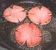
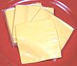

|
ar
1
2
1
ar
|
|
Jersey Pork Roll (1)
Kaiser Roll
Cheese Slices
(see note)
Egg
Lard (2)


|
Application Notes
- This is not "California cuisine" - it's, umm, "substantial", so if
you're not a steel worker or the like you probably won't want to try
to eat more than one at a sitting.
- Making this sandwich takes a bit of practice. Your first attempts
will surely be edible but may not look as nice as you'd like.
- A practiced Jersey fry cook would scoff at my frying the pork roll
and egg separately, but I don't expect I'll ever get that much
practice, so I play it safe.
- Slices from a block of Velveeta were too small and didn't melt well
but Kraft American Cheese Individual Slices worked fine.
- The photo sandwich is cut in half for clarity, but you
probably don't want to do that - it's messy.
- Preheat your broiler.
- Slice PORK ROLL to the thickness desired, around 1/8 inch is
good, two or three slices per sandwich as desired. Incise them from
the edges as shown (fireman's badge) or they'll bulge up in the
middle and not fry well.
- Slice KAISER ROLL ("Hard Roll" in NJ) into top and bottom
halves but put it back together so it won't dry out. Unwrap the slices
of CHEESE so they are ready.
- Heat Lard and fry Pork Roll until lightly browned.
Don't over-fry or it'll shrink a lot and dry out badly. When done,
remove from pan and set aside.
- Fry EGG "over easy" or "over medium" as you prefer - "over hard"
is too dry. While the egg is frying set your Pork Roll
slices on the lower half of the Kaiser Roll.
- When egg is done, set it on top of the Pork Roll slices. Top with
2 slices of Cheese and slip under the broiler. Check often,
the cheese should be well softened but not too runny or it'll drip right
off.
- Pull sandwich from the broiler, place the top of the Kaiser Roll on
top and you're ready to serve!
|